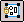
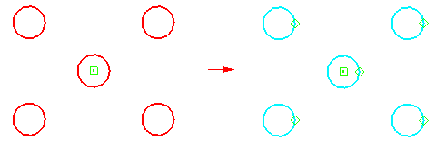
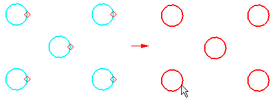
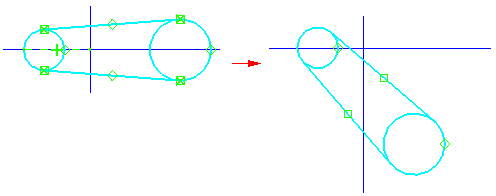
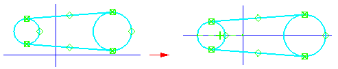

Rigid Set command
Use the Rigid Set command

to add a rigid set relationship to a set of 2D elements.
After you place the relationship, you can do such things as click and drag the set of elements to a new location,

rotate the set,

or apply a relationship between the set and another element or reference plane.

The set of elements can include lines, arcs, circles, ellipses, elliptical arcs, curves and points. It cannot include existing dimensions and annotations, nor can it include elements that have an include, offset, include + offset, or include + rigid set relationship.
You can locate elements that have a rigid set relationship. When you select an element that is part of a rigid set, the element is removed from the existing set and placed in the new set.